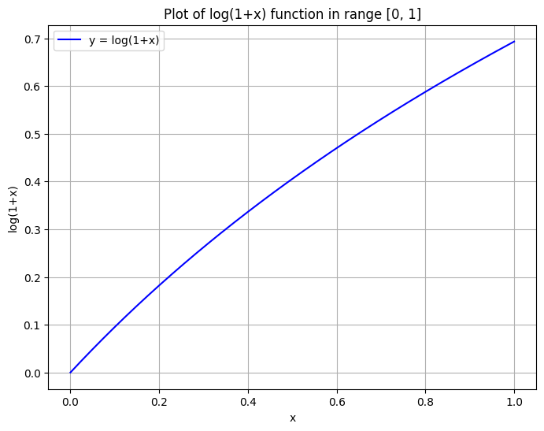
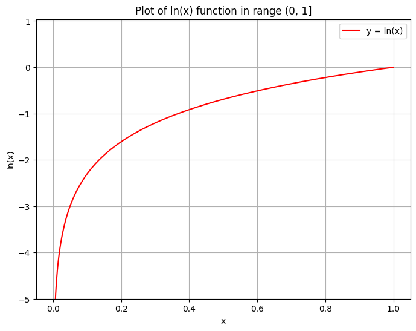
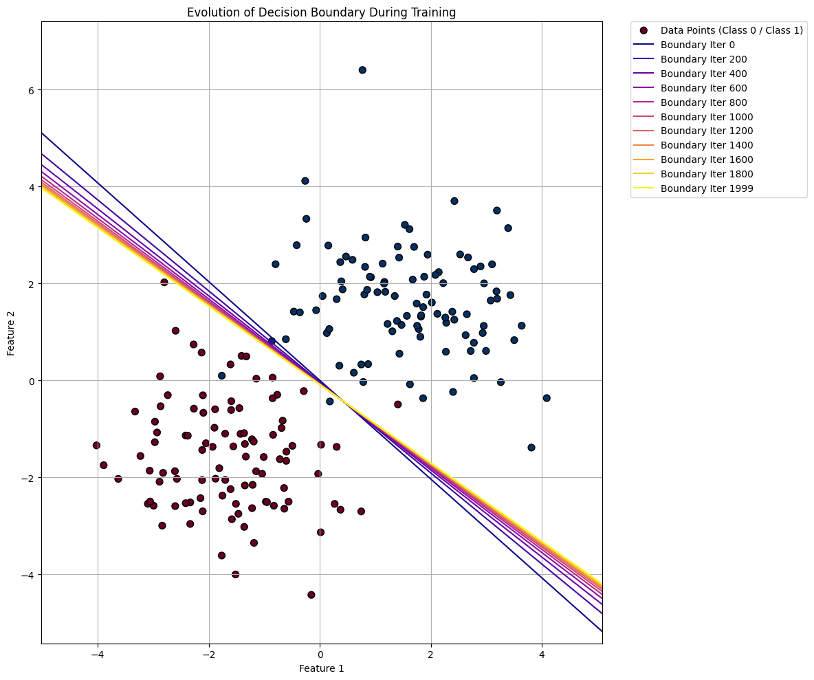
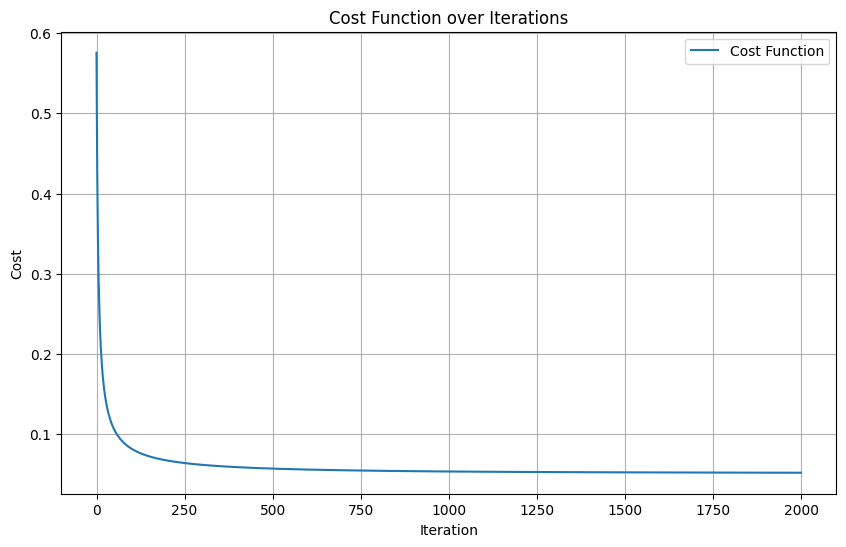
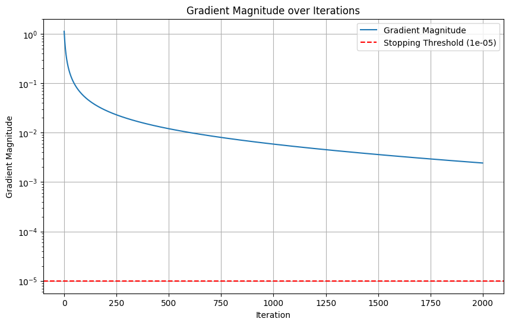
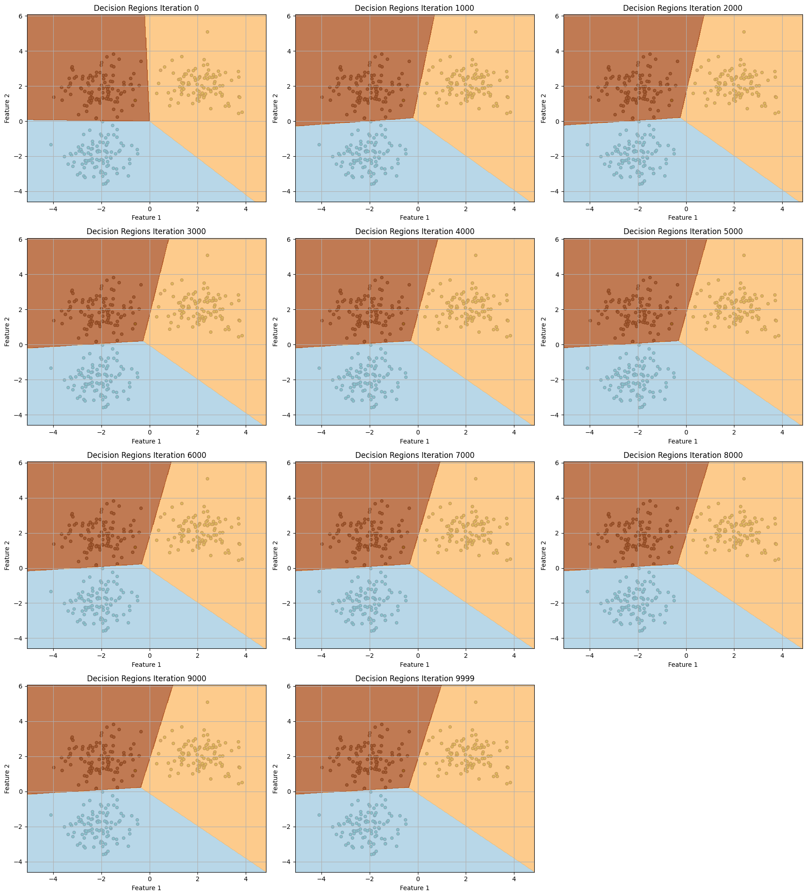
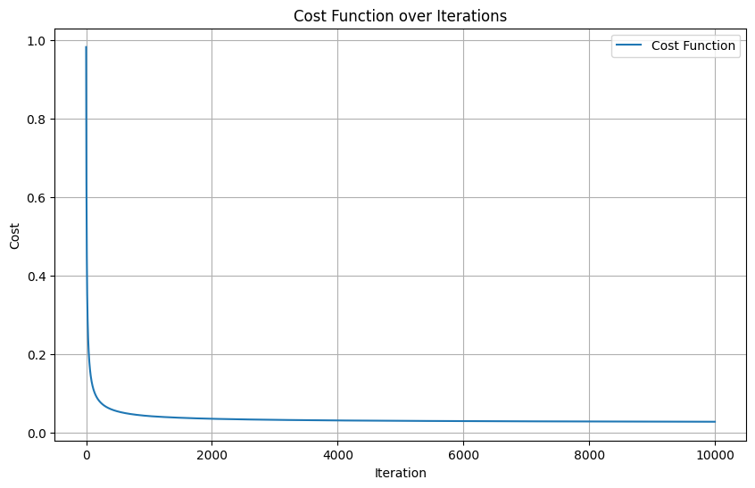
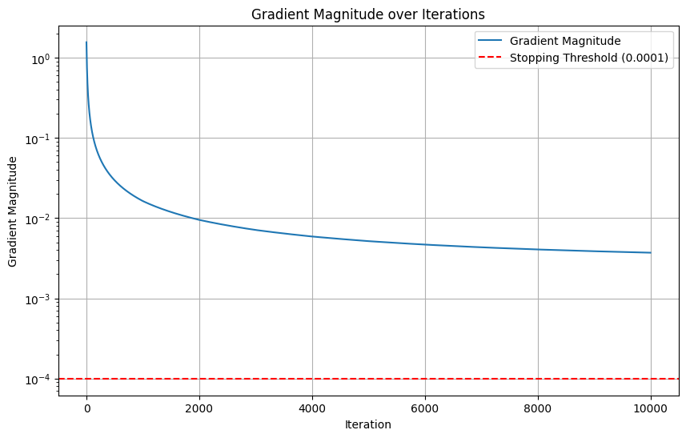
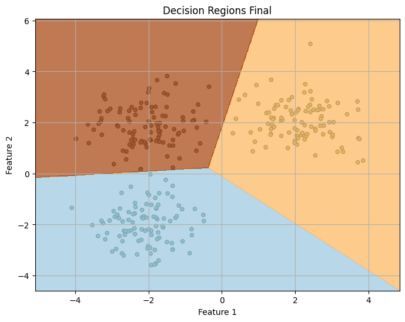
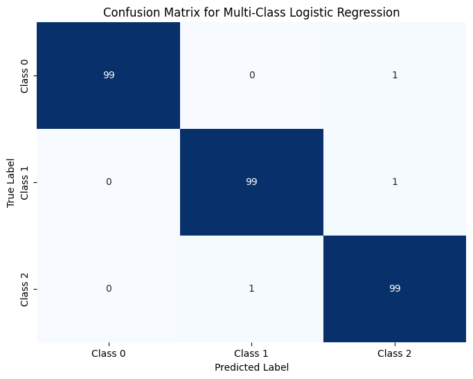

import numpy as np
import matplotlib.pyplot as plt# Generate x values from a small positive number up to 1 to avoid log(0)
x = np.linspace(0, 1, 400)
# Calculate y values using np.log1p (log(1+x))
y = np.log1p(x)
# Create the plot
plt.figure(figsize=(8, 6))
plt.plot(x, y, label='y = log(1+x)', color='blue')
plt.title('Plot of log(1+x) function in range [0, 1]')
plt.xlabel('x')
plt.ylabel('log(1+x)')
plt.grid(True)
plt.legend()
plt.show()
You requested log base e, which is the natural logarithm, usually written as ln(x) or log(x). It’s important to remember that log(0) is undefined, so when plotting log(x) within the range [0, 1], we must start x from a very small positive number to avoid errors and visualize its behavior as it approaches zero.
# Generate x values from a very small positive number (e.g., 1e-9) up to 1
x_ln = np.linspace(1e-9, 1, 400)
# Calculate y values using np.log (natural logarithm, base e)
y_ln = np.log(x_ln)
# Create the plot
plt.figure(figsize=(8, 6))
plt.plot(x_ln, y_ln, label='y = ln(x)', color='red')
plt.title('Plot of ln(x) function in range (0, 1]')
plt.xlabel('x')
plt.ylabel('ln(x)')
plt.grid(True)
plt.legend()
plt.ylim(bottom=-5)
plt.show()
import numpy as np
import matplotlib.pyplot as plt
# Set a random seed for reproducibility
np.random.seed(42)
class LogisticRegression:
def __init__(self, learning_rate=0.1, num_iterations=2000, threshold=0.5, epsilon=1e-5):
"""
Initializes the Logistic Regression model.
Args:
learning_rate (float): The step size for gradient descent.
num_iterations (int): The maximum number of training iterations.
threshold (float): The probability threshold for classifying a positive class.
epsilon (float): Small value to prevent log(0) and as stopping condition for gradient magnitude.
"""
self.learning_rate = learning_rate
self.num_iterations = num_iterations
self.threshold = threshold
self.epsilon = epsilon # Stopping condition for gradient magnitude
self.weights = None
self.bias = None
self.costs = []
self.gradients_magnitude = []
self.decision_boundaries = [] # Stores (weights, bias, iteration) for plotting
def sigmoid(self, z):
"""
The sigmoid activation function.
"""
return 1 / (1 + np.exp(-z))
def hypothesis(self, X):
"""
Computes the hypothesis (predicted probabilities).
h(X) = sigmoid(X * weights + bias)
"""
if self.weights is None or self.bias is None:
raise ValueError("Weights and bias not initialized. Call train() first.")
z = np.dot(X, self.weights) + self.bias
return self.sigmoid(z)
def compute_cost(self, X, y):
"""
Computes the Binary Cross-Entropy Loss (cost function).
"""
m = X.shape[0]
h = self.hypothesis(X)
# Add a small epsilon to log arguments to prevent log(0) or log(1-0) issues
cost = (-1/m) * np.sum(y * np.log(h + self.epsilon) + (1 - y) * np.log(1 - h + self.epsilon))
return cost
def compute_gradients(self, X, y):
"""
Computes the gradients of the cost function with respect to weights and bias.
"""
m = X.shape[0]
h = self.hypothesis(X)
dw = (1/m) * np.dot(X.T, (h - y))
db = (1/m) * np.sum(h - y)
return dw, db
def train(self, X, y, plot_every_n_iterations=200):
"""
Trains the logistic regression model using gradient descent.
Args:
X (np.ndarray): Feature matrix.
y (np.ndarray): Target vector.
plot_every_n_iterations (int): How often to save model parameters for boundary plotting.
"""
# Initialize weights and bias to zeros
num_features = X.shape[1]
self.weights = np.zeros(num_features)
self.bias = 0.0 # Use float for bias
print("Starting training...")
for i in range(self.num_iterations):
dw, db = self.compute_gradients(X, y)
# Calculate gradient magnitude for stopping condition
grad_magnitude = np.sqrt(np.sum(dw**2) + db**2)
self.gradients_magnitude.append(grad_magnitude)
# Update weights and bias using gradient descent
self.weights -= self.learning_rate * dw
self.bias -= self.learning_rate * db
# Store cost
cost = self.compute_cost(X, y)
self.costs.append(cost)
# Store decision boundary for visualization at specified intervals
if i % plot_every_n_iterations == 0 or i == self.num_iterations - 1:
self.decision_boundaries.append((self.weights.copy(), self.bias.copy(), i))
# Stopping condition: absolute value of gradient magnitude < epsilon
if grad_magnitude < self.epsilon:
print(f"Training stopped early at iteration {i}: Gradient Magnitude = {grad_magnitude:.8f} (below {self.epsilon})")
# Ensure the final boundary is saved if not already
if not (i == self.num_iterations - 1 and (i % plot_every_n_iterations == 0)):
self.decision_boundaries.append((self.weights.copy(), self.bias.copy(), i))
break
if i % (self.num_iterations // 10 + 1) == 0: # Print progress roughly 10 times
print(f"Iteration {i}: Cost = {cost:.4f}, Gradient Magnitude = {grad_magnitude:.8f}")
print("Training finished.")
def predict_proba(self, X):
"""
Predicts probabilities for the positive class.
"""
return self.hypothesis(X)
def predict(self, X):
"""
Predicts class labels (0 or 1) based on the threshold.
"""
probabilities = self.predict_proba(X)
return (probabilities >= self.threshold).astype(int)
def plot_decision_boundary(self, X, y, weights, bias, iteration_info=""):
"""
Plots the data points and the decision boundary.
"""
plt.figure(figsize=(8, 6))
# Plot data points, colored by their true class
plt.scatter(X[:, 0], X[:, 1], c=y, cmap=plt.cm.RdBu, marker='o', s=50, edgecolors='k', label='Data Points')
# Create a meshgrid for plotting the decision boundary
x_min, x_max = X[:, 0].min() - 1, X[:, 0].max() + 1
y_min, y_max = X[:, 1].min() - 1, X[:, 1].max() + 1
xx, yy = np.meshgrid(np.arange(x_min, x_max, 0.02),
np.arange(y_min, y_max, 0.02))
# Calculate the decision function Z = X*weights + bias
Z = np.dot(np.c_[xx.ravel(), yy.ravel()], weights) + bias
Z = Z.reshape(xx.shape)
# Plot the decision boundary (where Z = 0)
plt.contour(xx, yy, Z, levels=[0], colors='black', linestyles='--', alpha=0.7, label='Decision Boundary')
plt.title(f'Decision Boundary {iteration_info}')
plt.xlabel('Feature 1')
plt.ylabel('Feature 2')
plt.legend()
plt.xlim(x_min, x_max)
plt.ylim(y_min, y_max)
plt.grid(True)
plt.show()
# --- 1. Generate Synthetic Data for Binary Classification ---
print("Generating synthetic data...")
num_samples = 200
# Features
X_data = np.random.randn(num_samples, 2)
# Target labels
y_data = np.array([0] * (num_samples // 2) + [1] * (num_samples // 2))
# Shift the classes to make them somewhat separable
X_data[:num_samples//2, :] -= 1.5 # Class 0 centered around (-1.5, -1.5)
X_data[num_samples//2:, :] += 1.5 # Class 1 centered around (1.5, 1.5)
# Add some overlap/noise to make it more realistic and not perfectly separable
noise = np.random.randn(num_samples, 2) * 0.7
X_data += noise
print("Data generated.")
# --- 2. Model Training ---
lr_model = LogisticRegression(learning_rate=0.1, num_iterations=2000, epsilon=1e-5)
lr_model.train(X_data, y_data, plot_every_n_iterations=200)
# --- 3. Visualize Decision Boundaries at different stages (on a single plot) ---
print(f"\nPlotting {len(lr_model.decision_boundaries)} decision boundaries on a single plot:")
plt.figure(figsize=(12, 10))
# Plot data points, colored by their true class
plt.scatter(X_data[:, 0], X_data[:, 1], c=y_data, cmap=plt.cm.RdBu, marker='o', s=50, edgecolors='k', label='Data Points (Class 0 / Class 1)')
x_min, x_max = X_data[:, 0].min() - 1, X_data[:, 0].max() + 1
y_min, y_max = X_data[:, 1].min() - 1, X_data[:, 1].max() + 1
# Generate a color map for the boundaries based on the number of stored boundaries
line_colors = plt.cm.plasma(np.linspace(0, 1, len(lr_model.decision_boundaries)))
for i, (weights_iter, bias_iter, iteration_num) in enumerate(lr_model.decision_boundaries):
# The decision boundary is where X * weights + bias = 0
# For 2 features (x1, x2), this is: w0*x1 + w1*x2 + b = 0
# We can solve for x2: x2 = (-w0*x1 - b) / w1
if weights_iter[1] != 0: # Avoid division by zero for vertical lines
x_line = np.linspace(x_min, x_max, 100)
y_line = (-weights_iter[0] * x_line - bias_iter) / weights_iter[1]
plt.plot(x_line, y_line, color=line_colors[i], linestyle='-', linewidth=1.5,
label=f'Boundary Iter {iteration_num}')
elif weights_iter[0] != 0: # Handle nearly vertical lines (weights[1] close to zero)
# x1 = (-w1*x2 - b) / w0 (constant x1)
x_line_const = (-weights_iter[1] * y_min - bias_iter) / weights_iter[0] # Calculate x for a y
plt.axvline(x=x_line_const, color=line_colors[i], linestyle='-', linewidth=1.5,
label=f'Boundary Iter {iteration_num}')
# If both weights are zero, there's no meaningful boundary to plot, skip.
plt.title('Evolution of Decision Boundary During Training')
plt.xlabel('Feature 1')
plt.ylabel('Feature 2')
plt.xlim(x_min, x_max)
plt.ylim(y_min, y_max)
plt.grid(True)
# Adjust legend to be outside the plot area if there are many entries
plt.legend(bbox_to_anchor=(1.05, 1), loc='upper left', borderaxespad=0.)
plt.tight_layout() # Adjust layout to prevent labels from being cut off
plt.show()
# --- 4. Plot Cost Function over Iterations ---
plt.figure(figsize=(10, 6))
plt.plot(lr_model.costs, label='Cost Function')
plt.title('Cost Function over Iterations')
plt.xlabel('Iteration')
plt.ylabel('Cost')
plt.grid(True)
plt.legend()
plt.show()
# --- 5. Plot Gradient Magnitude over Iterations ---
plt.figure(figsize=(10, 6))
plt.plot(lr_model.gradients_magnitude, label='Gradient Magnitude')
plt.title('Gradient Magnitude over Iterations')
plt.xlabel('Iteration')
plt.ylabel('Gradient Magnitude')
plt.yscale('log') # Use log scale to better visualize small magnitudes
plt.axhline(y=lr_model.epsilon, color='r', linestyle='--', label=f'Stopping Threshold ({lr_model.epsilon})')
plt.grid(True)
plt.legend()
plt.show()
# --- 6. Final Prediction and Accuracy ---
y_pred = lr_model.predict(X_data)
accuracy = np.mean(y_pred == y_data) * 100
print(f"\nFinal training accuracy: {accuracy:.2f}%")
# --- 7. Plot Final Decision Boundary (This is now redundant if the above plot is comprehensive, but keeping it for comparison if needed) ---
# lr_model.plot_decision_boundary(X_data, y_data, lr_model.weights, lr_model.bias, 'Final')
# To avoid multiple plots, I will comment out the single final plot, as the combined plot shows the final state.Generating synthetic data...
Data generated.
Starting training...
Iteration 0: Cost = 0.5755, Gradient Magnitude = 1.12889787
Iteration 201: Cost = 0.0672, Gradient Magnitude = 0.02802903
Iteration 402: Cost = 0.0589, Gradient Magnitude = 0.01483751
Iteration 603: Cost = 0.0559, Gradient Magnitude = 0.01001933
Iteration 804: Cost = 0.0544, Gradient Magnitude = 0.00745362
Iteration 1005: Cost = 0.0535, Gradient Magnitude = 0.00584167
Iteration 1206: Cost = 0.0529, Gradient Magnitude = 0.00473022
Iteration 1407: Cost = 0.0526, Gradient Magnitude = 0.00391676
Iteration 1608: Cost = 0.0523, Gradient Magnitude = 0.00329617
Iteration 1809: Cost = 0.0521, Gradient Magnitude = 0.00280811
Training finished.
Plotting 11 decision boundaries on a single plot:


Final training accuracy: 98.50%import numpy as np
import matplotlib.pyplot as plt
# Set a random seed for reproducibility
np.random.seed(42)
class MultiClassLogisticRegression:
def __init__(self, learning_rate=0.1, num_iterations=5000, epsilon=1e-5, decay_rate=0.9):
"""
Initializes the Multi-Class Logistic Regression model.
Args:
learning_rate (float): The step size for gradient descent.
num_iterations (int): The maximum number of training iterations.
epsilon (float): Small value to prevent log(0) and as stopping condition for gradient magnitude.
"""
self.learning_rate = learning_rate
self.num_iterations = num_iterations
self.epsilon = epsilon # Stopping condition for gradient magnitude
self.weights = None
self.bias = None
self.costs = []
self.gradients_magnitude = []
self.decay_rate = decay_rate
def softmax(self, z):
"""
The softmax activation function for multi-class probabilities.
Numerically stable implementation.
"""
exp_z = np.exp(z - np.max(z, axis=1, keepdims=True))
return exp_z / np.sum(exp_z, axis=1, keepdims=True)
def hypothesis(self, X):
"""
Computes the hypothesis (predicted probabilities for each class).
h(X) = softmax(X * weights + bias)
"""
if self.weights is None or self.bias is None:
raise ValueError("Weights and bias not initialized. Call train() first.")
z = np.dot(X, self.weights) + self.bias
return self.softmax(z)
def compute_cost(self, X, y_one_hot):
"""
Computes the Categorical Cross-Entropy Loss (cost function).
Args:
X (np.ndarray): Feature matrix.
y_one_hot (np.ndarray): One-hot encoded target matrix.
"""
m = X.shape[0]
h = self.hypothesis(X)
# Add a small epsilon to log arguments to prevent log(0) issues
cost = (-1/m) * np.sum(y_one_hot * np.log(h + self.epsilon))
return cost
def compute_gradients(self, X, y_one_hot):
"""
Computes the gradients of the cost function with respect to weights and bias.
"""
m = X.shape[0]
h = self.hypothesis(X)
error = h - y_one_hot # (m, n_classes)
dw = (1/m) * np.dot(X.T, error) # (n_features, n_classes)
db = (1/m) * np.sum(error, axis=0) # (n_classes,)
return dw, db
def train(self, X, y, plot_every_n_iterations=500):
"""
Trains the multi-class logistic regression model using gradient descent.
Args:
X (np.ndarray): Feature matrix (m, n_features).
y (np.ndarray): Target vector (m,). Integer labels 0 to N-1.
plot_every_n_iterations (int): How often to save model parameters for boundary plotting.
"""
num_samples, num_features = X.shape
self.num_classes = len(np.unique(y))
# One-hot encode y
y_one_hot = np.eye(self.num_classes)[y]
# Initialize weights and bias
self.weights = np.zeros((num_features, self.num_classes))
self.bias = np.zeros(self.num_classes)
# For storing decision boundaries for visualization
self.decision_params = [] # Stores (weights, bias, iteration)
print("Starting training for Multi-Class Logistic Regression...")
for i in range(self.num_iterations):
dw, db = self.compute_gradients(X, y_one_hot)
# Calculate gradient magnitude for stopping condition
grad_magnitude = np.sqrt(np.sum(dw**2) + np.sum(db**2))
self.gradients_magnitude.append(grad_magnitude)
# Update weights and bias using gradient descent
self.weights -= self.learning_rate * dw
self.bias -= self.learning_rate * db
# Store cost
cost = self.compute_cost(X, y_one_hot)
self.costs.append(cost)
if (i+1)%1000 == 0:
# Decay learning rate
self.learning_rate = self.learning_rate * self.decay_rate
print("Learning Rate: ", self.learning_rate)
# Store decision parameters for visualization at specified intervals
if i % plot_every_n_iterations == 0 or i == self.num_iterations - 1:
self.decision_params.append((self.weights.copy(), self.bias.copy(), i))
# Stopping condition: absolute value of gradient magnitude < epsilon
if grad_magnitude < self.epsilon:
print(f"Training stopped early at iteration {i}: Gradient Magnitude = {grad_magnitude:.8f} (below {self.epsilon})")
if not (i == self.num_iterations - 1 and (i % plot_every_n_iterations == 0)):
self.decision_params.append((self.weights.copy(), self.bias.copy(), i))
break
if i % (self.num_iterations // 10 + 1) == 0: # Print progress roughly 10 times
print(f"Iteration {i}: Cost = {cost:.4f}, Gradient Magnitude = {grad_magnitude:.8f}")
print("Training finished.")
def predict_proba(self, X):
"""
Predicts probabilities for each class.
"""
return self.hypothesis(X)
def predict(self, X):
"""
Predicts class labels (0 to N-1).
"""
probabilities = self.predict_proba(X)
return np.argmax(probabilities, axis=1)
def plot_decision_regions(self, X, y, weights_set, bias_set, iteration_info="", ax=None):
"""
Plots the data points and the decision regions.
"""
if ax is None:
fig, ax = plt.subplots(figsize=(8, 6))
# Determine color map for classes
cmap_light = plt.cm.get_cmap('Paired', self.num_classes)
cmap_bold = plt.cm.get_cmap('Dark2', self.num_classes)
# Plot the training points
ax.scatter(X[:, 0], X[:, 1], c=y, cmap=cmap_bold, edgecolor='k', s=20, label='Data Points')
# Create a meshgrid for plotting decision regions
x_min, x_max = X[:, 0].min() - 1, X[:, 0].max() + 1
y_min, y_max = X[:, 1].min() - 1, X[:, 1].max() + 1
xx, yy = np.meshgrid(np.arange(x_min, x_max, 0.02),
np.arange(y_min, y_max, 0.02))
# Predict class for each point in the meshgrid
mesh_data = np.c_[xx.ravel(), yy.ravel()]
# Create a dummy model to use the predict method with specific weights/bias
temp_model = MultiClassLogisticRegression()
temp_model.weights = weights_set
temp_model.bias = bias_set
temp_model.num_classes = self.num_classes # Ensure num_classes is set for softmax
Z = temp_model.predict(mesh_data)
Z = Z.reshape(xx.shape)
# Plot the decision regions
ax.contourf(xx, yy, Z, cmap=cmap_light, alpha=0.8)
ax.set_title(f'Decision Regions {iteration_info}')
ax.set_xlabel('Feature 1')
ax.set_ylabel('Feature 2')
ax.set_xlim(xx.min(), xx.max())
ax.set_ylim(yy.min(), yy.max())
ax.grid(True)
# ax.legend() # This will be handled by the main plot if needed
return ax
# --- 1. Generate Synthetic Data for Multi-Class Classification ---
print("Generating synthetic multi-class data...")
num_samples_per_class = 100
num_classes = 3
X_multi = []
y_multi = []
# Manually create clusters for each class
np.random.seed(42)
centers = np.array([
[-2, -2], # Center for class 0
[ 2, 2], # Center for class 1
[-2, 2] # Center for class 2
])
for i in range(num_classes):
X_multi.append(np.random.randn(num_samples_per_class, 2) * 0.8 + centers[i])
y_multi.append(np.full(num_samples_per_class, i))
X_multi = np.vstack(X_multi)
y_multi = np.hstack(y_multi)
print("Multi-class data generated.")
# --- 2. Model Training ---
mclr_model = MultiClassLogisticRegression(learning_rate=0.05, num_iterations=10000, epsilon=1e-4)
mclr_model.train(X_multi, y_multi, plot_every_n_iterations=1000)
# --- 3. Visualize Decision Regions at different stages (on a single plot) ---
print(f"\nPlotting {len(mclr_model.decision_params)} decision regions on a single plot:")
# Create a grid of subplots
rows = int(np.ceil(np.sqrt(len(mclr_model.decision_params))))
cols = int(np.ceil(len(mclr_model.decision_params) / rows))
fig, axes = plt.subplots(rows, cols, figsize=(cols*6, rows*5))
axes = axes.flatten() # Flatten the array for easy iteration
for i, (weights_iter, bias_iter, iteration_num) in enumerate(mclr_model.decision_params):
ax = axes[i]
mclr_model.plot_decision_regions(X_multi, y_multi, weights_iter, bias_iter, f'Iteration {iteration_num}', ax=ax)
# Hide any unused subplots
for j in range(i + 1, len(axes)):
fig.delaxes(axes[j])
plt.tight_layout()
plt.show()
# --- 4. Plot Cost Function over Iterations ---
plt.figure(figsize=(10, 6))
plt.plot(mclr_model.costs, label='Cost Function')
plt.title('Cost Function over Iterations')
plt.xlabel('Iteration')
plt.ylabel('Cost')
plt.grid(True)
plt.legend()
plt.show()
# --- 5. Plot Gradient Magnitude over Iterations ---
plt.figure(figsize=(10, 6))
plt.plot(mclr_model.gradients_magnitude, label='Gradient Magnitude')
plt.title('Gradient Magnitude over Iterations')
plt.xlabel('Iteration')
plt.ylabel('Gradient Magnitude')
plt.yscale('log') # Use log scale to better visualize small magnitudes
plt.axhline(y=mclr_model.epsilon, color='r', linestyle='--', label=f'Stopping Threshold ({mclr_model.epsilon})')
plt.grid(True)
plt.legend()
plt.show()
# --- 6. Final Prediction and Accuracy ---
y_pred_multi = mclr_model.predict(X_multi)
accuracy_multi = np.mean(y_pred_multi == y_multi) * 100
print(f"\nFinal training accuracy (Multi-Class): {accuracy_multi:.2f}%")
# --- 7. Plot Final Decision Regions (stand-alone) ---
fig, ax = plt.subplots(figsize=(8,6))
mclr_model.plot_decision_regions(X_multi, y_multi, mclr_model.weights, mclr_model.bias, 'Final', ax=ax)
plt.show()Generating synthetic multi-class data...
Multi-class data generated.
Starting training for Multi-Class Logistic Regression...
Iteration 0: Cost = 0.9821, Gradient Magnitude = 1.56109548
Learning Rate: 0.045000000000000005
Iteration 1001: Cost = 0.0418, Gradient Magnitude = 0.01630872
Learning Rate: 0.04050000000000001
Iteration 2002: Cost = 0.0349, Gradient Magnitude = 0.00950048
Learning Rate: 0.03645000000000001
Iteration 3003: Cost = 0.0322, Gradient Magnitude = 0.00711319
Learning Rate: 0.03280500000000001
Iteration 4004: Cost = 0.0306, Gradient Magnitude = 0.00589713
Learning Rate: 0.02952450000000001
Iteration 5005: Cost = 0.0296, Gradient Magnitude = 0.00516298
Learning Rate: 0.02657205000000001
Iteration 6006: Cost = 0.0289, Gradient Magnitude = 0.00467348
Learning Rate: 0.02391484500000001
Iteration 7007: Cost = 0.0284, Gradient Magnitude = 0.00432499
Learning Rate: 0.021523360500000012
Iteration 8008: Cost = 0.0280, Gradient Magnitude = 0.00406512
Learning Rate: 0.01937102445000001
Iteration 9009: Cost = 0.0276, Gradient Magnitude = 0.00386455
Learning Rate: 0.01743392200500001
Training finished.
Plotting 11 decision regions on a single plot:/tmp/ipykernel_5282/2484821077.py:147: MatplotlibDeprecationWarning: The get_cmap function was deprecated in Matplotlib 3.7 and will be removed in 3.11. Use ``matplotlib.colormaps[name]`` or ``matplotlib.colormaps.get_cmap()`` or ``pyplot.get_cmap()`` instead.
cmap_light = plt.cm.get_cmap('Paired', self.num_classes)
/tmp/ipykernel_5282/2484821077.py:148: MatplotlibDeprecationWarning: The get_cmap function was deprecated in Matplotlib 3.7 and will be removed in 3.11. Use ``matplotlib.colormaps[name]`` or ``matplotlib.colormaps.get_cmap()`` or ``pyplot.get_cmap()`` instead.
cmap_bold = plt.cm.get_cmap('Dark2', self.num_classes)


Final training accuracy (Multi-Class): 99.00%
from sklearn.metrics import confusion_matrix
# Calculate the confusion matrix
cm_multi = confusion_matrix(y_multi, y_pred_multi)
print("\nConfusion Matrix (Multi-Class):\n")
print(cm_multi)
# Optionally, you can visualize it (requires matplotlib and seaborn)
import seaborn as sns
plt.figure(figsize=(8, 6))
sns.heatmap(cm_multi, annot=True, fmt='d', cmap='Blues', cbar=False,
xticklabels=[f'Class {i}' for i in range(mclr_model.num_classes)],
yticklabels=[f'Class {i}' for i in range(mclr_model.num_classes)])
plt.xlabel('Predicted Label')
plt.ylabel('True Label')
plt.title('Confusion Matrix for Multi-Class Logistic Regression')
plt.show()
Confusion Matrix (Multi-Class):
[[99 0 1]
[ 0 99 1]
[ 0 1 99]]
X_multi[0]array([-1.60262868, -2.11061144])y_multi[0]np.int64(0)X_multi.shape(300, 2)mclr_model.weightsarray([[-1.04258849, 2.4672815 , -1.42469301],
[-2.7849625 , 0.97322799, 1.81173451]])z = np.dot(X_multi[0,:], mclr_model.weights) + mclr_model.bias
zarray([ 7.81224451, -5.39231954, -2.41992496])mclr_model.softmax(z.reshape(1,3))array([[9.99962166e-01, 1.84210451e-06, 3.59922363e-05]])